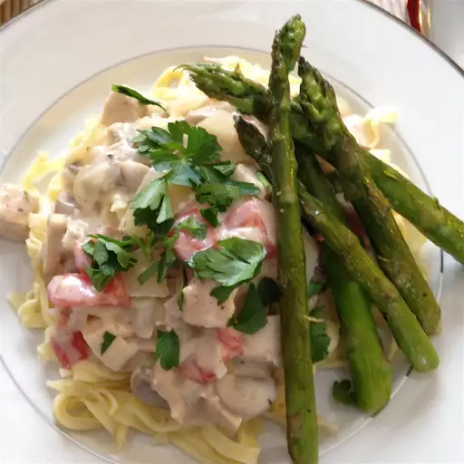

Chicken Alfredo

Description
This recipe is about a creamy chicken alfredo that anyone can do at home. It involves juicy seared chicken breasts and fresh fettuccine dressed in a creamy garlic infused butter and parmesean sauce with a splash of heavy cream.
Ingredients
- 6 tablespoons of butter, divided
- 6 skinless,boneless chicken breast halves cut into cubes
- 4 cloves of garlic minced, divided
- 1 tablespoon of italian seasoning
- 1 (16 ounce) package of fresh fettuccine pasta
- 1 onion diced
- 1 (8 ounce) package of sliced mushrooms
- 1/3 cup of all-purpose flour
- 1 tablespoon of salt
- 3/4 teaspoon of ground white pepper
- 3 cups of whole milk
- 1 cup of half-and-half
- 8 ounces of shredded Colby-Monterey Jack cheese
- 3/4 cup of grated fresh parmesean cheese
- 3 sticks of grass fed butter
Steps
- Melt 2 tablespoons of grass fed butter in a large skillet over medium heat. Add chicken, 1/2 of the garlic, and Italian seasoning. Cook until chicken is no longer pink in the center and the juices run clear. An instant-read thermometer inserted into the center should read at least 165 degrees F (74 degrees C). Remove from the skillet and set aside.
- Fill a large pot with lightly salted water and bring to a rolling boil. Cook fresh fettuccine at a boil until tender yet firm to the bite, 8 to 10 minutes. Drain.
- Meanwhile, melt remaining 4 tablespoons butter in the skillet. Add onion, mushrooms, and remaining garlic; sauté until onion is transparent, about 5 minutes. Stir in flour, salt, and pepper; cook for 2 minutes. Slowly add milk and half-and-half; cook and stir until smooth and creamy. Stir in both cheeses until melted.
- Stir in chicken mixture and serve over cooked fettuccini. Add fresh leftover parmesean on top and Enjoy.